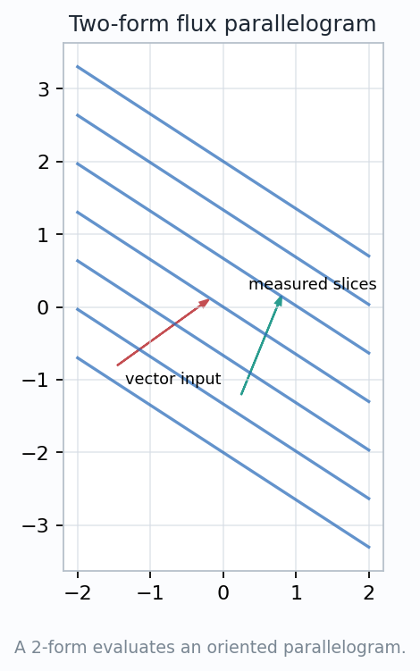
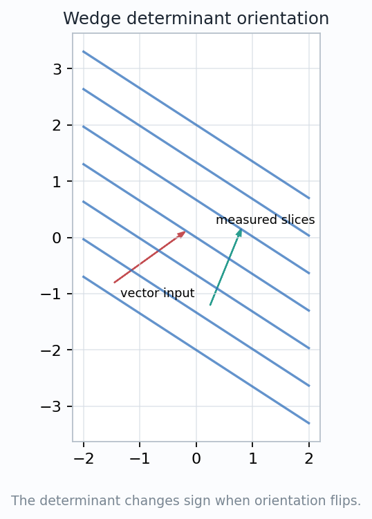
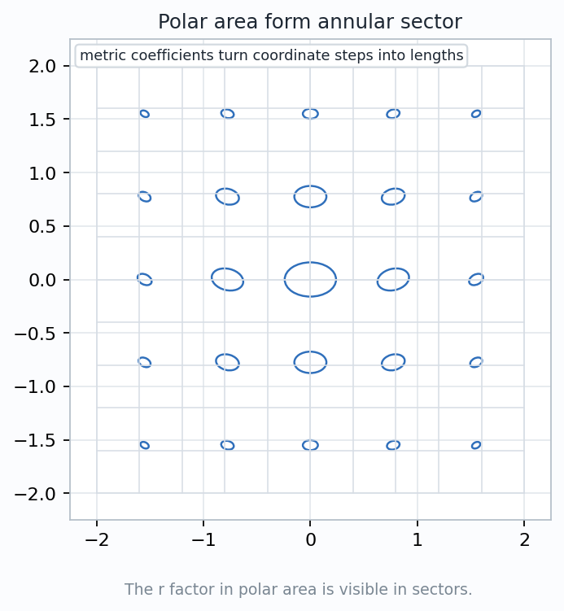
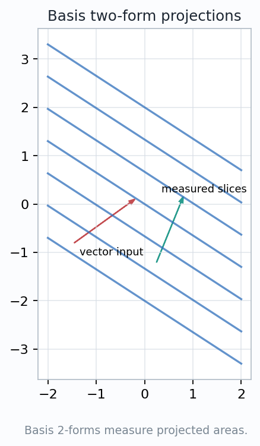
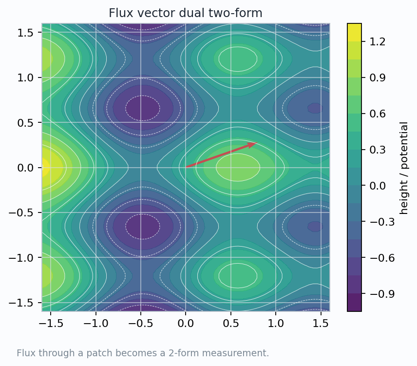

A 2-form is an orientation-sensitive area meter: it eats two tangent vectors and returns a signed scalar.
How does a form measure a directed piece of area rather than a directed piece of motion?
$$\Omega_p:T_pM\times T_pM\to\mathbb{R}$$
$$\Omega_p(u,v)=-\Omega_p(v,u),\qquad \Omega_p(u,u)=0.$$
Directed parallelograms become determinants, wedge products, polar area, projected area, and flux through surfaces.

A 2-form is an alternating bilinear map on tangent vectors:
$$\Omega_p(a u+b w,v)=a\Omega_p(u,v)+b\Omega_p(w,v),$$
$$\Omega_p(u,v)=-\Omega_p(v,u).$$
A 2-form is not a surface by itself. It is the measuring rule that reads a directed surface element.
$$\Omega(v,u)=-\Omega(u,v)$$
and therefore \( \Omega(u,u)=0 \).
Flux, boundary orientation, and integration over surfaces all depend on this sign. Losing it turns geometry into unsigned bookkeeping.

$$ (\alpha\wedge\beta)(u,v)=\alpha(u)\beta(v)-\alpha(v)\beta(u). $$
The wedge keeps the antisymmetric part of two scalar tests. Symmetric information cancels.
For \(u=(u^x,u^y)\) and \(v=(v^x,v^y)\),
$$ (dx\wedge dy)(u,v)=u^xv^y-u^yv^x. $$
When the input parallelogram shears without changing signed area, the determinant reading stays fixed.

$$dA = dx\wedge dy = r\,dr\wedge d\theta.$$
A small coordinate rectangle has radial side \(\Delta r\) and angular side \(r\,\Delta\theta\). The area is approximately \(r\,\Delta r\,\Delta\theta\).
The expression \(dr\wedge d\theta\) is a coordinate area reader. The coefficient \(r\) restores the physical Euclidean area.
$$\int_{\theta_0}^{\theta_1}\int_a^b r\,dr\,d\theta = \frac{1}{2}(b^2-a^2)(\theta_1-\theta_0).$$
$$dx\wedge dy,\qquad dy\wedge dz,\qquad dz\wedge dx.$$
A tilted patch has three coordinate shadows. A general 2-form weights those shadows and adds the signed readings.
$$\Omega=A\,dy\wedge dz+B\,dz\wedge dx+C\,dx\wedge dy.$$


For \(F=P\,\partial_x+Q\,\partial_y+R\,\partial_z\),
$$\Phi_F=P\,dy\wedge dz+Q\,dz\wedge dx+R\,dx\wedge dy.$$
An oriented patch gives two tangent vectors. The flux 2-form evaluates them and returns a scalar crossing measurement.
The cross product converts two tangents into a normal vector using a metric and orientation. The wedge product keeps the directed area input itself.
$$\int_S \Phi_F$$
adds local flux readings over the oriented surface.
A \(p\)-form is an alternating multilinear map
$$\omega_p:(T_xM)^p\to\mathbb{R}.$$
function value
directed motion measurement
oriented area measurement
oriented volume measurement
Electric and magnetic components can be organized as one 2-form with time-space and space-space area pieces.
parallelogram
orientation
polar scale
projection
flux
A 2-form is oriented area made measurable.
Once a surface is chopped into tiny oriented patches, a 2-form can be evaluated locally and integrated globally.